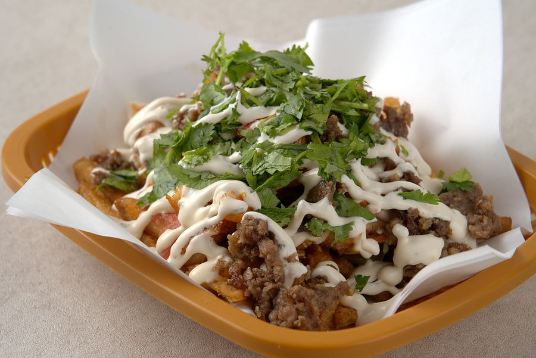

← Back to menu
Halal Snack Pack

Crispy Cajun fries piled with halal-certified beef — the only Australian-style snack pack in Jinju.
- Chicken₩8,500
- Mix₩9,000
- Beef₩9,500
What goes in
| Chicken | halal-certified chicken 110 g, tomato, jalapeño, white sauce, red sauce, Cajun fries |
| Mix | halal-certified beef 55 g, halal-certified chicken 55 g, tomato, jalapeño, white sauce, red sauce, Cajun fries |
| Beef | halal-certified beef 110 g, tomato, jalapeño, white sauce, red sauce, Cajun fries |
Nutrition (per serving)
| Chicken | Mix | Beef | |
|---|---|---|---|
| Weight | 280g | 280g | 280g |
| Calories | 546kcal | 577kcal | 608kcal |
| Carbohydrate | 42.0g | 42.0g | 42.0g |
| Sugars | 4.0g | 4.0g | 4.0g |
| Protein | 30.2g | 32.6g | 35.0g |
| Fat | 28.3g | 30.7g | 33.1g |
| Saturated fat | 5.3g | 7.1g | 8.9g |
| Trans fat | 0.16g | 0.46g | 0.76g |
| Cholesterol | 117.1mg | 106.9mg | 96.7mg |
| Sodium | 884.4mg | 866.4mg | 848.4mg |
Estimated from our recipe and the Korean national food composition table — not a lab-tested value.
Ingredients estimated from similar foods: Jalapeño
Where the ingredients come from
| Ingredient | Origin |
|---|---|
| Beef | Indonesia, Australia, Brazil |
| Chicken | Indonesia, Australia, Brazil |
| Tomato | Korea |
| Jalapeño | Korea |
| Potato | India |
| Mayonnaise | Korea |
| Yogurt | Korea |
| Garlic | Korea |
| Ketchup | Korea |
| Sriracha | Thailand |
| Chili sauce | India |
| Lemon juice | Chile |
Reviews from customers who ordered this
Real reviews from Baemin and Coupang Eats, from orders that included this item (in Korean). Nicknames partly hidden.
루***Baemin
급하게 먹게되어서 사진은 없습니다만, 정말 맛있게 잘먹었습니다 ㅎㅎ 특히 스낵팩이 정말 궁금했는데, 프라이즈 계열의 케밥이였군요!!! 곧 또 시켜먹겠습니다 :)